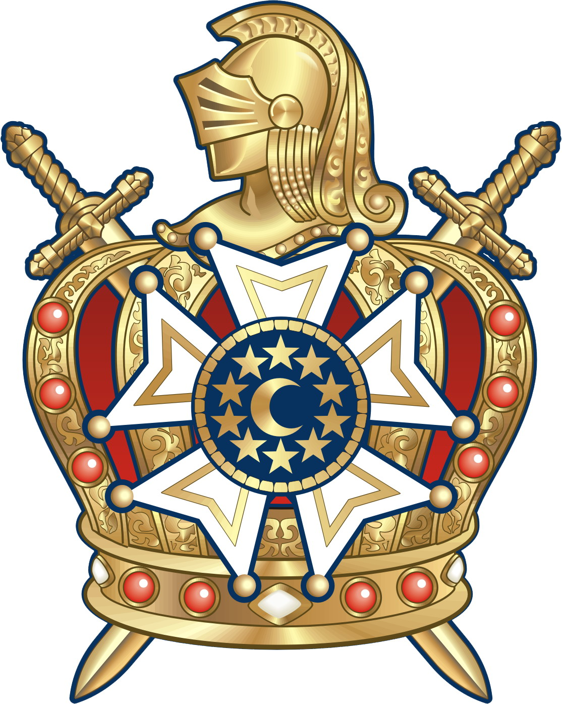

Capítulos DeMolay do Amazonas
Os Capítulos DeMolays são as células da Ordem onde os jovens realizam atividades administrativas, filantrópicas e de desenvolvimento pessoal. Cada capítulo representa um espaço de liderança, amizade e compromisso com a comunidade.
Aqui estão alguns dos capítulos ativos no estado, com seus dados de contato, guia de reuniões e uma história própria. Escolha um capítulo para saber mais e descobrir como participar dessa trajetória.